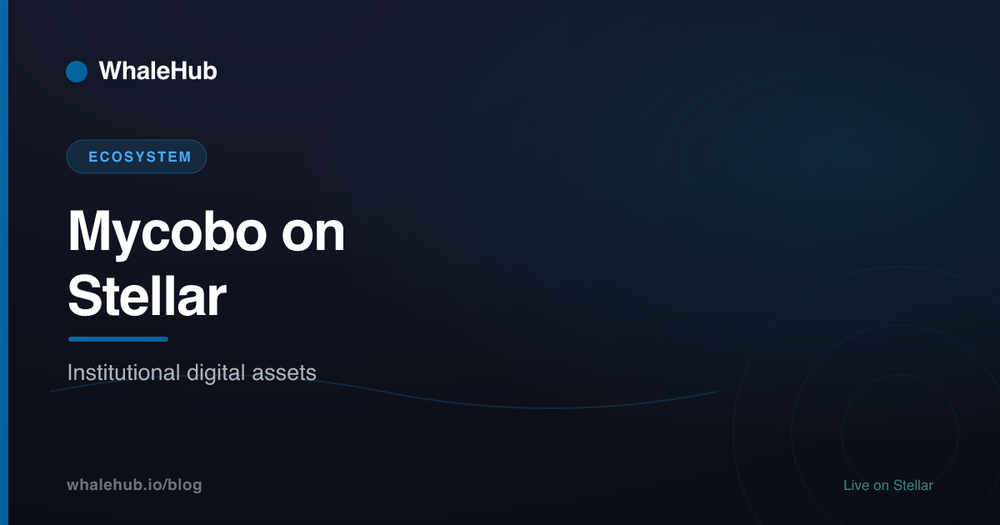

Mycobo: Institutional Digital Assets on Stellar

Mycobo is a regulated financial-technology company that runs a euro anchor on the Stellar network — it issues a euro-backed stablecoin and provides compliant on- and off-ramps between traditional bank money and the blockchain. It is one example of how Stellar, which settles in about five seconds for a fraction of a cent, has become a home for regulated, institution-grade digital assets — not just retail DeFi.
Who is Mycobo?
Mycobo is a regulated fintech that operates a euro anchor on Stellar. It issues a euro-backed stablecoin and connects European bank rails (SEPA) to the blockchain, so users and businesses can convert euros into on-chain stablecoins and back again. It is registered with the Polish General Inspector of Financial Information (GIFI) and applies KYC checks like any regulated financial service.
In Stellar terms, Mycobo is an anchor: a regulated entity that holds fiat reserves and issues a matching on-chain token, then honours redemptions back to a bank account. That role is deliberately unglamorous — it is the plumbing that lets regulated money enter and exit a public network cleanly.
Rather than chasing speculative yield, platforms like Mycobo focus on the parts institutions care about most: licensing, identity verification, auditable reserves, and predictable settlement. That is a different job from a DeFi protocol, but the two depend on each other — you cannot farm yield with capital that never made it on-chain in the first place.
What Mycobo actually does
Mycobo issues a euro-backed stablecoin on Stellar and runs the compliant on- and off-ramps around it. Users link a bank account, pass KYC, deposit euros over SEPA, and receive stablecoins in their own wallet — non-custodially. The same rails run in reverse for withdrawals, and the stablecoin can be used for payments, transfers, and cross-border settlement.
Its core functions are narrow and well defined:
- Stablecoin issuance. A euro-denominated token intended to track the euro one-for-one, backed by reserves held off-chain by the regulated issuer.
- Fiat on- and off-ramps. Deposit euros via SEPA to mint stablecoins; redeem stablecoins back to a bank account. Because the flow is non-custodial, tokens land in the user's own Stellar wallet.
- Cross-border payments. Once value is a Stellar asset, it can move globally in seconds for a fraction of a cent, which is the network's original design goal.
- Developer access. Standardised interfaces so wallets and apps can plug the ramp into their own products.
Everything else in the Stellar economy — trading a stablecoin on the built-in DEX, providing liquidity, or earning yield — happens after this step. For a broader look at fiat-pegged assets on the network, see our guide to stablecoins on Stellar.
Why Stellar suits institutional issuance
Stellar was built for issuing and moving value, not just running arbitrary code. Assets are a first-class primitive, access is controlled with trustlines and optional authorization flags, and settlement is fast and cheap. Those compliance-friendly controls and predictable costs are exactly what a regulated issuer needs to put fiat-backed money on a public chain.
Four network properties matter for an institutional issuer:
- Native asset issuance. Creating a token is a built-in operation, not a bespoke smart contract — fewer moving parts, fewer places for a bug to hide.
- Trustlines and authorization. A holder must explicitly open a trustline to hold an asset, and issuers can require authorization or freeze/claw back under defined rules. That gives regulated issuers the access controls their compliance obligations demand.
- Fast, deterministic finality. The Stellar Consensus Protocol confirms in roughly five seconds with no reorg risk, so a payment either settles or it doesn't.
- Near-zero, predictable fees. A base transaction costs 0.00001 XLM, so the cost of moving regulated money stays negligible and forecastable.
On top of that, Stellar standardises how anchors talk to wallets through its Stellar Ecosystem Proposals (SEPs) — covering authentication, KYC data exchange, and interactive deposits and withdrawals. That shared vocabulary is what lets a compliant ramp interoperate with many wallets without custom integrations each time. If the network's fundamentals are new to you, start with our Stellar DeFi guide.
How a compliant on-ramp works
A regulated on-ramp turns a euro bank transfer into an on-chain stablecoin in a few standardised steps: connect a wallet, authenticate, verify identity, send fiat, and receive tokens. Stellar's SEP standards define each step so the flow is consistent across anchors and wallets, while the user keeps custody of the resulting assets.
The mechanism is easier to see as a step list. A typical deposit ("on-ramp") looks like this:
1. Connect wallet → user links a Stellar wallet to the anchor
2. Authenticate → wallet proves key ownership (SEP-10)
3. Verify identity → KYC data collected once (SEP-12)
4. Open trustline → wallet opts in to hold the stablecoin
5. Deposit fiat → user sends EUR by SEPA to the issuer
6. Receive tokens → issuer mints stablecoin to the wallet (SEP-24)
── withdrawal runs the same path in reverse ──Two things are worth underlining. First, identity verification happens once at the ramp, not on every transaction — the chain itself stays permissionless. Second, the resulting tokens are held non-custodially in the user's wallet, so from that point the assets behave like any other Stellar asset and can flow into the wider ecosystem.
Where Mycobo fits in the Stellar stack
Stellar serves two audiences at once. Regulated players like Mycobo handle the institutional edge — issuance, compliance, and fiat rails — while protocols like Aquarius and WhaleHub handle the retail DeFi layer of trading, liquidity, and yield. The same network, and often the same assets, flow between both worlds.
It helps to see the institutional and retail sides side by side. They are complementary, not competing:
| Dimension | Institutional edge (e.g. Mycobo) | Retail DeFi (e.g. Aquarius, WhaleHub) |
|---|---|---|
| Primary job | Issue assets, on/off-ramp fiat | Trade, provide liquidity, earn yield |
| Access | KYC + regulated onboarding | Permissionless wallet, no gatekeeper |
| Custody | Reserves off-chain; tokens non-custodial | Self-custody in a Stellar wallet |
| Typical asset | Fiat-backed stablecoins, tokenized value | AQUA, BLUB, LP positions |
| Value it adds | Brings regulated money on-chain | Puts on-chain money to work |
Stellar's wider push toward tokenization — turning fiat, funds, and other real-world value into on-chain assets — leans on exactly this division of labour. Regulated anchors supply trustworthy, redeemable tokens; open protocols supply markets and yield. Mycobo is one participant on the compliant side of that line.
Mycobo, DeFi, and WhaleHub
Mycobo and WhaleHub sit at opposite ends of the same pipeline. Mycobo is the compliant entrance — it converts euros into Stellar stablecoins. WhaleHub is a yield optimizer further down the chain that stakes AQUA, aggregates ICE voting power, and auto-compounds Aquarius rewards. One brings capital on-chain; the other helps it earn.
You don't have to use Mycobo to use WhaleHub, and vice versa — but the flow shows how the pieces connect. A regulated ramp gets value onto Stellar; the built-in DEX and Aquarius AMM provide markets and liquidity; and an optimizer like WhaleHub does the tedious, profitable work of voting emissions and compounding rewards on stakers' behalf.
WhaleHub itself focuses on the yield layer. You stake AQUA, receive BLUB as a liquid receipt minted 1:1 on stake — a floating, market-priced derivative of your staked position, not a redeemable claim — and earn a proportional share of everything the pool harvests, compounded roughly every 30 minutes. The regulated ramps and the DeFi optimizers are different jobs, but they add up to a network where value can enter cleanly and then work efficiently.
Mycobo is a small, specific piece of a larger story: Stellar maturing into a network that regulated institutions and open DeFi can both use. The ramp brings compliant money on-chain; protocols like Aquarius and WhaleHub decide what it does next. Understanding both halves is the point of this series.
Frequently asked questions
What is Mycobo?
Mycobo is a regulated financial-technology company that operates a euro anchor on Stellar. It issues a euro-backed stablecoin and provides compliant on- and off-ramps between euro bank accounts and the blockchain, letting users move between fiat and stablecoins over SEPA.
Is Mycobo regulated?
Yes. Mycobo operates as an EU-regulated service and is registered with the Polish General Inspector of Financial Information (GIFI). Like any regulated ramp, it requires KYC identity verification before you can deposit or withdraw, in line with anti-money-laundering rules.
Does Mycobo run on Stellar?
Yes. Mycobo is a Stellar anchor and implements the Stellar Ecosystem Proposals that standardise deposits, withdrawals and authentication (such as SEP-10, SEP-12, SEP-24 and SEP-31). It also supports other networks, but Stellar is central to its euro-stablecoin rails.
Why is Stellar suited to institutional tokenization?
Stellar issues assets natively, enforces access with trustlines and optional authorization flags, and settles in about five seconds for a fraction of a cent. Those compliance-friendly controls and predictable costs make it practical for regulated issuers to put fiat-backed and real-world assets on-chain.
How is Mycobo different from WhaleHub?
Mycobo is a regulated fiat gateway: it converts euros to and from stablecoins on Stellar. WhaleHub is a DeFi yield optimizer that stakes AQUA and auto-compounds Aquarius rewards. They sit at opposite ends of the same ecosystem — one brings money on-chain, the other puts it to work.
WhaleHub is a yield-optimization protocol on Stellar. We stake AQUA, aggregate ICE voting power, and auto-compound Aquarius rewards for stakers. This series explains the Stellar ecosystem — from regulated ramps to DeFi — in plain English.
Read more


Put your Stellar assets to work
Once capital is on-chain, WhaleHub stakes AQUA, aggregates ICE, and auto-compounds Aquarius rewards for you.
Launch the appThis article is for educational purposes only and is not financial advice. WhaleHub is not affiliated with Mycobo. Details about third-party platforms can change; verify specifics with the provider directly. DeFi involves risk, including the potential loss of capital. Do your own research and consult a qualified professional before making financial decisions.